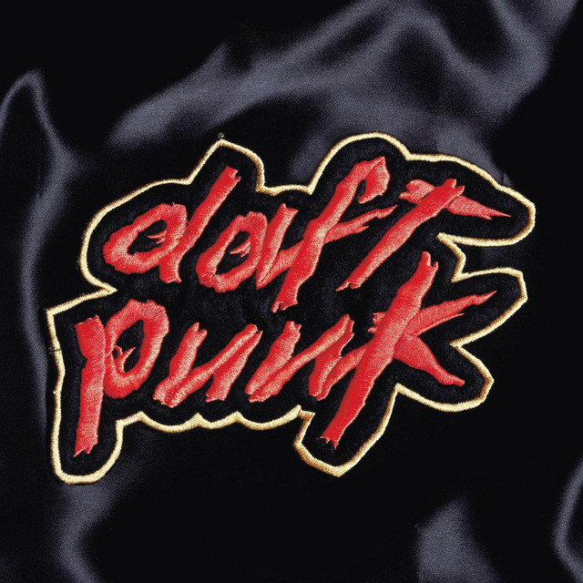
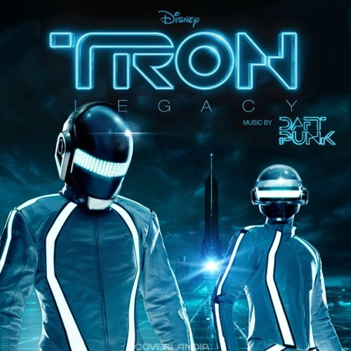

Homework (1997)
El debut que inició todo. Incluye clásicos como "Around the World" y "Da Funk".
Explora los álbumes que redefinieron la música electrónica, desde su debut en 1997 hasta su icónica despedida en 2021.
El debut que inició todo. Incluye clásicos como "Around the World" y "Da Funk".

Un giro hacia sonidos melódicos y nostálgicos. Contiene "One More Time" y "Harder, Better, Faster, Stronger".

Explorando la relación entre humanos y máquinas. Destacan "Robot Rock" y "Technologic".

Un homenaje al funk y la música disco. Contiene el éxito global "Get Lucky".
Además de sus álbumes de estudio, Daft Punk dejó su huella en la banda sonora de Tron: Legacy y colaboraciones como "Starboy" con The Weeknd.
